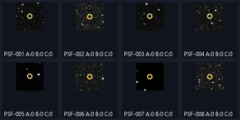

同一真值集下的点源检测消融
这次完成了真实 FITS 背景上的一套点源注入对照：先固定注入位置和图像，再比较 Gaussian 基线、多尺度 DoG 提案，以及在同一 Hybrid 候选上应用现有质量门。
点源实验已运行 运动关联补充实验已运行
真实输入：20260330163205413_9901.fits · SHA-256：6d6926a0546a5e2d28c6e76762bf72127ff3f0e37b589993eb381881bfe0acc6 · 运行时间：142.2 秒
1. 本次完成了什么
已实现共享输入的实验编排，冻结 float32 控制图、各信号档注入图、目标坐标、随机种子和生效参数；逐个目标导出 A/B/C 命中、质心偏差及质量拒绝原因。真实 FITS 运行完成，具体结果见下表。
2. 实验为什么公平
同一 float32 控制图→固定目标 ID、坐标、PSF
分别生成冻结注入图→A / B / C 读取
完全相同的图像→同一半径
一对一匹配
- A：Gaussian 候选提案基线。
- B：只把提案扩展为 Gaussian + DoG；候选阈值、FWHM、测量和背景规则不变。
- C：不重跑检测，直接对同一 B 候选池应用现有
quality_passed质量门；拒绝旗标保留。
无注入控制在目标位置的匹配半径内有 0 个已有候选。实际匹配半径是 3.0 px；规则为最近距离优先的一对一分配。
3. 主要结果：逐信号强度配对
振幅指连续 Gaussian 在亚像素质心处的模型中心振幅；斜线后列出 8 个固定位置对应的理论最高采样像素增量范围。召回写成命中数／注入数。区间为逐目标 Wilson 95% 描述区间；同一图像上的位置和多个信号档相关，因此不能据此做独立样本总体推断。
| Gaussian 中心振幅 / 理论最高采样像素增量范围（ADU） | 版本 | 命中／目标数（召回） | Wilson 95% 区间* | 定位误差中位数 / P90（px） | 未回收 | 候选检测耗时（C 复用 B；门控未单独计时） |
|---|---|---|---|---|---|---|
| 12 / 10.09–11.94 ADU | A 基线 Gaussian 提案 | 0/8 (0.000) | [0.000, 0.324] | — / — | 8 | 15.5 s |
| 12 / 10.09–11.94 ADU | B Gaussian+DoG 多尺度提案 | 0/8 (0.000) | [0.000, 0.324] | — / — | 8 | 22.4 s |
| 12 / 10.09–11.94 ADU | C 对 B 候选应用现有质量门 | 0/8 (0.000) | [0.000, 0.324] | — / — | 8 | 22.4 s |
| 24 / 20.18–23.87 ADU | A 基线 Gaussian 提案 | 4/8 (0.500) | [0.215, 0.785] | 0.387 / 0.632 | 4 | 15.9 s |
| 24 / 20.18–23.87 ADU | B Gaussian+DoG 多尺度提案 | 4/8 (0.500) | [0.215, 0.785] | 0.387 / 0.632 | 4 | 22.2 s |
| 24 / 20.18–23.87 ADU | C 对 B 候选应用现有质量门 | 0/8 (0.000) | [0.000, 0.324] | — / — | 8 | 22.2 s |
| 56 / 47.08–55.71 ADU | A 基线 Gaussian 提案 | 8/8 (1.000) | [0.676, 1.000] | 0.175 / 0.424 | 0 | 15.5 s |
| 56 / 47.08–55.71 ADU | B Gaussian+DoG 多尺度提案 | 8/8 (1.000) | [0.676, 1.000] | 0.175 / 0.424 | 0 | 22.5 s |
| 56 / 47.08–55.71 ADU | C 对 B 候选应用现有质量门 | 2/8 (0.250) | [0.071, 0.591] | 0.259 / 0.356 | 6 | 22.5 s |
质量门的配对变化
12 ADU：B 0/8 → C 0/8，质量门损失 0/0 候选命中。 24 ADU：B 4/8 → C 0/8，质量门损失 4/4 候选命中。 56 ADU：B 8/8 → C 2/8，质量门损失 6/8 候选命中。
额外候选仅统计目标匹配半径内一对一分配后剩余的候选，不称作假阳性。未标注背景中的其他候选也没有用于计算精确率或误检率。
4. 具体注入目标对比
下图展示最低信号档的每个固定注入点。标题里的 A/B/C 为该目标是否被回收（1=是，0=否）；C 表示质量门后的命中。

真实目标的新增回收、仍漏检与质量误拒绝均可在逐目标 CSV 中按状态筛选；如果本轮未出现某类情况，则表格中对应分子为零，不补造示例。
5. 这些结果能证明什么
由于同一组坐标重复测试多个强度，样本之间有关联。本轮是可复核的算法工程对照，不作为广泛天文总体结论或物理解释。
6. 比赛如何呈现
7 分钟陈述可用的核心表
展示上面的逐强度 A/B/C 召回表，并同时说出分母：例如“在同一真实背景上的 N 个已知注入目标中，基线回收 x 个，多尺度回收 y 个，质量门后 z 个”。再用案例图解释新增召回和质量损失。不要把候选总数说成真实星数。
3 分钟程序演示建议
- 现场打开固定 FITS，展示常规识别入口和当前候选/质量层定义。
- 展示预先完成的逐目标消融报告，说明相同输入、位置和匹配半径。
- 现场只运行一次选定识别参数并展示输出；不要把完整多版本消融放入 3 分钟计时。
当前只实测了消融内的 detector 用时，尚未测 GUI 启动、载入 FITS 和现场操作总耗时。报告中的运行时间为本次离线实验时间，不代表比赛现场演示时长。
7. 复现与原始证据
本次实际命令：
C:\Users\lycohana\Desktop\rst19\.venv\Scripts\rst19-ablation doc/00-项目资料/原始数据/20260330163205413_9901.fits --out-dir tmp/ablation/point-final-20261012 --report deliverables/ablation/index.html --peak-levels 12 24 56 --targets 8 --seed 19019 --psf-fwhm 2 --injected-psf-fwhm 2 --threshold-sigma 4 --min-distance 4 --aperture-radius 4 --background-box-size 128 --min-flux-snr 5 --min-psf-support-pixels 3 --match-radius-px 3 --reuse-manifest tmp/ablation/point-complete-20261012/manifest.json使用 manifest 中冻结坐标重放：
uv run rst19-ablation "C:\Users\lycohana\Desktop\rst19\doc\00-项目资料\原始数据\20260330163205413_9901.fits" --targets 8 --peak-levels 12 24 56 --reuse-manifest "C:\Users\lycohana\Desktop\rst19\tmp\ablation\point-final-20261012\manifest.json" --out-dir "tmp/ablation/replay" --report "deliverables/ablation/index.html"- 完整配置、哈希、真实生效参数和耗时 manifest.json
- 按版本和信号档汇总 summary.csv
- 逐目标命中、定位和拒绝原因 target_results.csv
- 冻结 float32 图像：frozen_inputs 目录（含无注入控制和各档注入 .npy 文件）
- 最低信号档案例图

摘要和逐目标 CSV 随交付报告保存；较大的冻结图像保存在项目忽略的本地实验目录，未纳入 Git。重放命令会读取同一原始 FITS 并验证 SHA-256，然后从 manifest 直接复用坐标。逐档注入图像仍会重新生成并记录新的哈希，以检查输入是否可复现。
实验输出目录：C:\Users\lycohana\Desktop\rst19\tmp\ablation\point-final-20261012 · 报告生成时间：2026-10-12T00:47:02+08:00
8. 运动约束：独立的轨迹关联对照
该实验冻结同一逐帧质量源列表，A 使用普通最近邻轨迹关联，B 在保留 A 多帧轨迹的同时，对未被 A 串联的质量点运行速度预测补充关联。轨迹真值按每帧实际观测时间生成，速度以中位相邻帧间隔归一化；图中横轴按帧序显示。注入对象是逐帧 Detection 记录，不重新经过图像像素检测；因此它验证的是关联阶段，不是运动目标的像素检出能力。
| 固定真值轨迹 | 角色 | 有效观测／总帧数 | A 普通关联精确轨迹 | A 关联碎片数 | B 速度补充精确轨迹 | B 最佳补充点数 | B 是否关联到背景源 |
|---|---|---|---|---|---|---|---|
| FAST-15 | 快速正例，15/15 | 15/15 | False | 15 | True | 15/15 | False |
| FAST-GAP-12 | 快速正例，3 个分散缺帧，12/15 | 12/15 | False | 12 | True | 12/12 | False |
| SLOW-BASE-15 | 慢速普通关联正例，15/15 | 15/15 | True | 1 | False | 0/15 | False |
| BELOW-12 | 持续性负例，11/15 | 11/15 | False | 11 | False | 0/11 | False |
真值含 15/15 快速正例、带 3 个分散缺帧的 12/15 快速正例、15/15 慢速基线正例和 11/15 的持续性负例。统一参数：普通关联半径 4 px、最少 12 帧；补充层 SNR ≥ 7、速度上限 20 px/参考间隔、预测门 4.5 px、拟合 RMS ≤ 1.5 px。缓存重算配准相对已保存平移的最大偏差为 0.0000 px；逐帧质量点数和 15 个原始 FITS SHA-256 已核验。

橙点表示普通关联中目标的点，绿线表示速度预测补充轨迹，黄线表示注入真值。背景污染仅检查轨迹是否混入该冻结质量源列表中的其它检测 ID；11/15 负例用于验证 min_presence 门，不是全图误报率估计。
本次实际命令：
C:\Users\lycohana\Desktop\rst19\.venv\Scripts\rst19-motion-ablation --cache .rst19-cache/3cbeaf34b7381421ab13d688048b6eaa1a084da0c91cf0862800759e9e52a955.sequence.json.gz --point-run-dir tmp/ablation/point-final-20261012 --out-dir tmp/ablation/motion-final-20261012 --report deliverables/ablation/index.html- 运动关联参数、来源哈希和运行耗时 manifest.json
- 逐轨迹结果 trajectory_results.csv
- A/B 配对摘要 motion_pairing.csv
- 冻结真值轨迹 truth_trajectories.json
- 送入两种关联器的冻结逐帧源列表
缓存：C:\Users\lycohana\Desktop\rst19\.rst19-cache\3cbeaf34b7381421ab13d688048b6eaa1a084da0c91cf0862800759e9e52a955.sequence.json.gz · SHA-256：faad5e153b6e4991b5558fed1dd1f291ae74a43eba2c665275183beb9b0bfc85 · 实验目录：C:\Users\lycohana\Desktop\rst19\tmp\ablation\motion-final-20261012